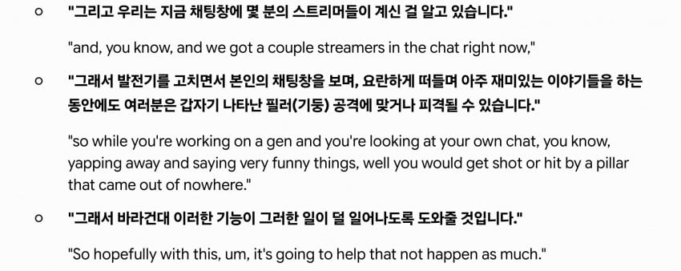

스타1 게임으로 비유하자면
스트리머들은 다른거 하다보면 다크템플러 일꾼 썰리고있을때 놓칠수도 있으니
따로 화면에 이펙트 알려주겠다는 꼴
게임 밸런싱을
게임에 집중 안하고 다른 화면 보는 새끼들 기준으로 밸런싱한다고
레딧여론마저 돌아서버림

스타1 게임으로 비유하자면
스트리머들은 다른거 하다보면 다크템플러 일꾼 썰리고있을때 놓칠수도 있으니
따로 화면에 이펙트 알려주겠다는 꼴
게임 밸런싱을
게임에 집중 안하고 다른 화면 보는 새끼들 기준으로 밸런싱한다고
레딧여론마저 돌아서버림
댓글
수집 당시 댓글 18개
최후의광휘 · 2 시간 전
벌처마인 경보기로 비유했으면 반발 없었다
어뎁터 · 1 시간 전
매튜겜
느부갓네살 · 1 시간 전
그 스킬에 제약이 없는거도 아닌데 누가보면 막쏴도 맞는줄 ㅋㅋ
털보지 · 1 시간 전
데바데 몇년만에 하니까 맵 사이즈 반토막 나고 구조물도 확 줄었던데; 이젠 생존자가 할만함? 필살무적의 데하도 바꼈던데
smarthuman · 1 시간 전
원래 생존마겜이라 살인마가 할만해진거일듯 Op살인마 몇개 너프,생존자는 더 넓게너프
매칭존망겜 · 1 시간 전
이젠이 아니라 항상 생존자가 우위였지 않나?
털보지 · 1 시간 전
아 반대로얘기했네 ㅋㅋ 이제 킬러가 할만한가싶어서
확증편향 · 16 분 전
근데 살인마한테 불리한 패치도 몇몇함 캠핑하면 다른 갈고리로 옮겨가거나 아니면 시계가 항상 적용되거나..?
털보지 · 13 분 전
구조물들이 반토막나서 몇년만에 하니깐 동선 어떻게 짜야할지도 몰겄더라 ㅋㅋ
작은타우렌 · 1 시간 전
데바데는 하는 게임이 아니라 보는 게임임
가지전사 · 1 시간 전
난 데바데 방송하는 애들 보면 항상 5인 구독권빵 걸어놔서 사이버 도박장 만든거 같던데
잉어빵붕어킹 · 51 분 전
데바데는 그 갈고리 매달때 내는 소리좀 줄여라 이거때매 시끄러워서 보다가 끔 보면서 자다가도 깸
겐지원쳄 · 25 분 전
저기도 킬러가 부족하면서 생존자 상향만하네 오버워치도 탱부족한데 힐러만 상향함 그냥 시발 어휴
구름이ㅇ · 20 분 전
다템이 일꾼 썰 때.. 아군이 공격받고 있습니다 하잖아 ~
끼룩끼룩이 · 18 분 전
원킬로 썰리면 알람 안뜨지않나?
구름이ㅇ · 15 분 전
부멉충 · 18 분 전
한방에 죽으면 소리 안 남
구름이ㅇ · 15 분 전